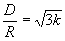

|
Cellular Structure of Mobile Networks The following article published by the "Mobile Telephony and Telecommunications" magazine (no. 28, February 1999; read here the actual magazine extract in Greek). It constitutes part of the MSc dissertation which presented by Metsinis Aristotelis as part of the course work of the MSc in "Telecommunication and Information Systems" offered by the university of Essex during 1997 - 98 academic year, with title: "Radio Wave Propagation with Applications on Cellular Mobile Radio Systems". Cellular radio concept The principle idea behind the design of either an analog or digital (e.g. GSM, DCS/GSM1800) radio network is based upon the cell concept. Each geographical area is divided into smaller areas - cells, i.e. hexagonals tangent at each other composing a cell pattern. This cell pattern can be repeatedly placed over that area providing radio coverage.7 The transmission power is kept at such levels in order to confine the radio signal within the boundaries of a cell while providing adequate coverage and quality of service. The advantage of this strategy is the increase in the network capacity through frequency re-use to cover cells separated from one another by sufficient distances, minimizing co-channel interference (phenomenon which refers to the impact on a channel that a mobile is tuned, by the transmission of a distant base station antenna over the same channel). 5,7,9 Cell dimensioning and co-channel interference considerations In order to confine the interference between adjacent cells at minimum levels, cells are organized in clusters. Within a cluster of cells, the whole available radio spectrum is exploited. A portion of the total number of channels is allocated to each cell, while adjacent cells within the same cluster are assigned different groups of channels. To effectively filter the co-channel interference, the mean re-use distance D of a frequency can be calculated by the following formula: , where R stands for the cell radius and k for the number of cells which form a cluster (e.g. k=4, 7, 12). The equation shows clearly that co-channel interference is decreased by increasing k while the cell size is kept constant, at the expense of less available channels per cell. It should be noted that unlike thermal noise, co-channel interference can not be combated by increasing the transmitter power, as such a solution may increase the interference in an adjacent cell. 4,5,6,7 An increasing capacity demand can lead to cell splitting, so that a cell contains several smaller size cells. Each smaller size cell provides the same number of channels as the former cell, without the need of a wider spectrum. This approach requires lower power and height transmitters as well as an increase in the number of those, to provide essentially coverage to the same area. Over a relatively short propagation path, it is often possible to arrange the radio link between the transmitter and the receiver to be clear line - of - sight path. In such a microcellular pattern, the relatively low antennas located above the local vehicular traffic and below the surrounding buildings benefit in two ways: First, shadow fading due to the local traffic can be eliminated, and second the radio signal can be confined and directed into a limited size microcell. Moreover, the lower microcellular base station antenna limits excess signal delay spread due to multipath reflection, which can cause intersymbol interference (ISI) in digital radio systems, since the distant reflectors are blocked. However, co-channel interference may increase again.2,5,7 In this case, sectoring can improve the carrier to interference ratio. This solution requires the replacement of the omni-directional base station antennas by directive antennas for each e.g. 60o, 120o cell sector. The penalty for improved signal to interference ratio is clearly an increased number of antennas at each base station and actually a reduced number of available channels, because the number of individual cells in a cluster increases by a factor equal to the number of the newly formed sectors. Such conditions increase the number of handoffs (a cellular network mechanism explained later).4,7 Further improvement in signal to interference ratio can be achieved by antenna down-titling, which deliberately focuses the radiated energy from the base station towards the ground rather towards the horizon, limiting the radio coverage of newly formed microcells or sectors.4 It is worth mentioning that installation of a base station with three 120o directive antennas on a cell vertex can offer coverage in three cells instead of one (if the base station had been located in the center of a cell), reducing the number of base station sites.8 In mobile networks, the cell dimensioning depends on user density. Hence, smaller cells are used within urban areas (which are interference limited), whereas cells are made as large as the propagation loss allows in rural areas, where the required channels per square km is lower. In practice, both GSM and DCS networks consist of similar size cells in urban areas, but in rural areas an extra 10 dB propagation loss, due to the higher operational frequency of the latter system, halves the diameter of DCS radio cells.5,8 The hexagonal cell shape is conceptual and a simplistic model of the coverage of each base station transmitting antenna. The actual cellular coverage is determined by the contour in which a transmitter provides adequate quality of service.3 Adjacent channel interference. An additional limitation in cellular radio Interference is more severe in urban areas due to the greater radio frequency noise floor and the large number of base stations and mobiles. Recognizing co-channel interference as one of the two major types of system-generating cellular interference, adjacent channel interference also constitutes a bottleneck in the efficient network operation. Adjacent channel interference results from imperfect receiver filters, which allow nearby frequencies to leak into the passband. Such an interference can severely affect the transmission between a receiver and a base station, if an adjacent channel user is transmitting either in a very close range to the receiving antenna or very close to the base station (in this case, on a channel close to the one being used by a “weak” mobile). Careful filtering and channel assignment between adjacent cells can minimize adjacent channel interference which is worse in small cell clusters and heavily loaded cells.4 However, the most significant problem in (cellular) mobile radio systems is due to the channel itself, referred to as multipath interference, which give rise to fading and dispersion effects. Handover, as an example of network functionality to compensate for propagation limitations Handover (handoff) is the mechanism that hands - over the subscriber’s radio connection from frequencies used in one cell to frequencies used in an adjacent cell while the mobile migrates between cells. It can be triggered either by the signal falling below a threshold level, or detecting a large power budget from an adjacent base site, or by a poor signal quality (indicated e.g. by an error rate exceeding a threshold), or, even, by an excessive timing advance while the mobile is located too far from the base site.4 An effective and reliable handover mechanism can play a significant role in the control of co-channel interference, particularly as the cell size is reduced, as well as in the mobile power control. Essentially, by controlling the power of the mobile, the likelihood of its causing interference is reduced. On the other hand, an effective handover mechanism needs to ensure that the drop in the measure signal is not due to momentary fading which may lead to unnecessary handover actions. It should be noted that even when the mobile is stationary, ambient motion in the vicinity of the base station and the mobile can produce fading.5 Furthermore, high-speed vehicles pass through the coverage region of a cell in a matter of seconds, whereas e.g. pedestrians may never need a handover during a call. In such cases, by using different antenna heights and different power levels, it is possible to provide “large” and “small” cells co-located at a single area, offering large coverage area to high speed users and smaller coverage to low speed users. This approach ensures that the number of handovers is minimized for high-speed users and provides additional microcell capacity for pedestrian users.4 GSM/DCS transmission specifications The International Telecommunications Union (ITU) has allocated a paired frequency bands of 890 - 915 MHz and 935 - 960 MHz for operation by a GSM network. The former band is used for upward communication (uplink) from the mobile to the base station, while the latter band is used for downward communication (downlink) from the base station to the mobile unit, supporting full duplex transmission by using two sub-bands spaced 45 MHz apart. A channel spacing of 200 kHz defines a maximum of 124 frequency channels in each band. For a DCS network, the frequency band runs from 1710 MHz to 1785 MHz on the uplink, and from 1805 MHz to 1880 MHz on the downlink, supporting full duplex communication by using two sub-bands spaced 95 MHz apart. A channel spacing of 200 kHz allows a maximum of 374 carries in each DCS band. Essentially, DCS maintains the structure of a GSM network. However, the evolution from 900 MHz transmission to 1800 MHz operation will emerge access to a wider available bandwidth (150 MHz compared to 50 MHz for GSM), as well as small and lower power handsets (250 mWatt - 1Watt compared to 20mWatts - 2Watt for GSM). In addition, DCS cells extend up to 5 km compared to 35 km for GSM. The higher operational frequency, in the case of a DCS system, implies both greater propagation loss and a radio signal even more prone to interference and dispersion due to reflections. On the other hand, a DCS system will be suitable for transmission within microcellular patterns, which will provide exclusive coverage to buildings, underground railway stations, etc., due to the small cell size and low transmission power. The GSM network is designed so that the mobile station is instructed to use only the minimum power level necessary to achieve effective communication with the base station, increasing the battery lifetime and reducing interference. The power output of a base station transceiver may be controlled, nominally in 2 dB steps, in order to provide better co-channel interference performance. The following table illustrates the base station transceiver (BTS) and mobile unit power classes.
High power repeaters are used at rural areas where the nominal cell radius could be well in excess of 3 km (up to 35 km), while low power repeaters are used for indoor applications. In urban areas the cell radius implemented, may be less than 1 km, or in the region of 200 - 300 m if a microcellular pattern is designed. The signal level received at mobile and base transceiver stations have to meet the threshold specified in GSM technical specification 05.05, referred to as the reference sensitivity. For a hand portable unit the reference sensitivity is -102 dBm, while for a BTS is set to -104 dBm.5,7 Finally, according to the GSM specifications, a GSM receiver will work properly if the carrier to co-channel interference (due to intersymbol interference or due to interference from GSM transmitters in other cells) is better than 9 dB.1 References - bibliography
|